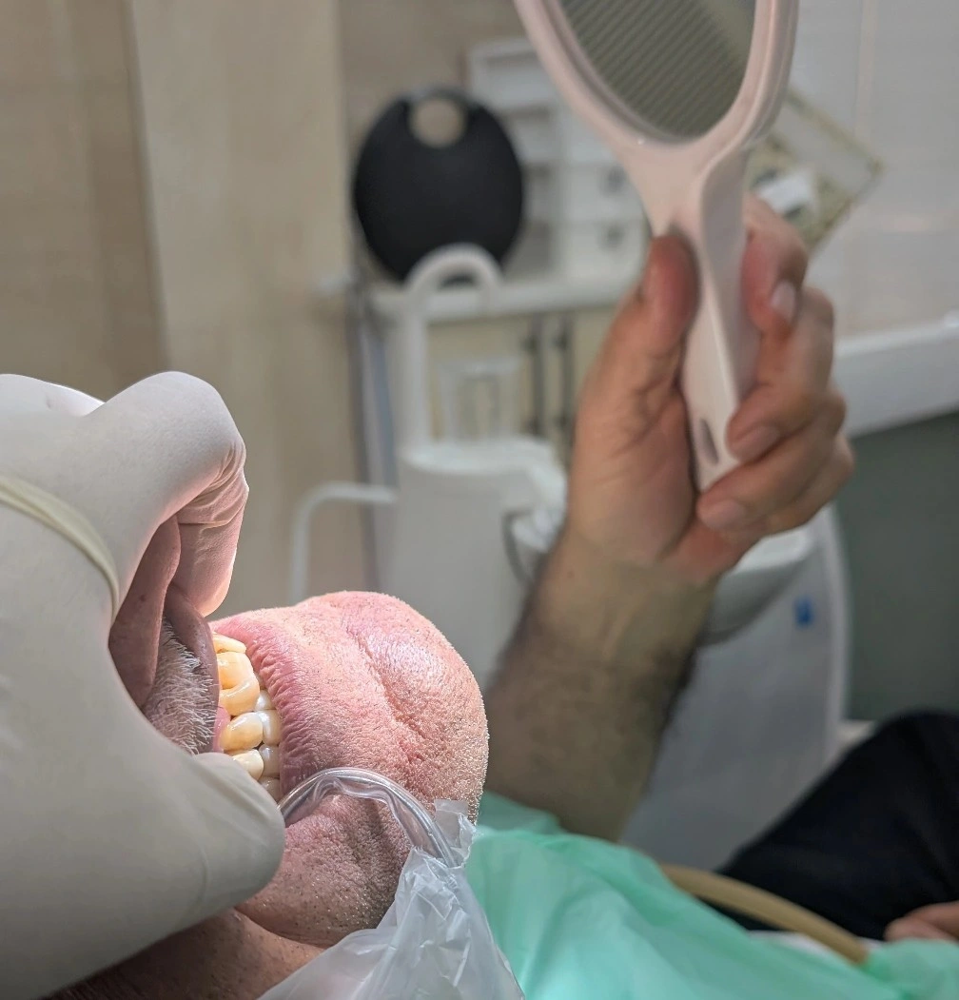

Insight 56 — استفاده از آینه به عنوان بیوفیدبک دیداری در ثبت حرکات لترالی
تاریخ انتشار:
آخرین بازبینی:
English

توضیح بالینی
در بیمارانی که جهتیابی فکی و اجرای حرکات لترالیِ درخواستی برایشان دشوار است، آینه بهعنوان یک لایهی بازخورد بصری، ابهامِ دستور کلامی را برطرف میکند و کنترل حرکتی بیمار را در همان جلسه بهتر میکند
یکی از مراحل ضروری در تنظیم نهایی اکلوژن رستوریشنها و روکشها، بررسی حرکات لترالی فک است تا مطمئن شویم در مسیرهای حرکتی، تداخل اکلوزالی (Occlusal Interference) وجود ندارد. در بیمارانی که هماهنگی عصبیعضلانی ضعیفی دارند یا در اجرای دستورهای جهتدار (چپ و راست) دچار مشکل میشوند، آینه میتواند به عنوان یک ابزار بیوفیدبک دیداری، کنترل حرکتی بیمار را در همان جلسه بهتر کند.
-
چالش در مطب
هنگام چک کردن اکلوژن در حرکات اکسکورسیو (Excursive)، بسیاری از بیماران با دستور کلامی «فکت را به چپ یا راست ببر» گیج میشوند. تکرار جمله یا استفاده از عبارتهایی مثل «به سمت من» و «از من دور کن» معمولاً کمکی نمیکند و نتیجهاش یکی از این سه حالت است: انقباض عضلانی نامناسب، حرکت مکرر فقط به یک سمت، یا جایگزین شدن حرکت پروتروسیو (Protrusive) به جای حرکت لترالی. همین موضوع تنظیم رستوریشن را طولانی و خستهکننده میکند. -
راهکار بالینی
راه حل ساده است: فعال کردن مسیر بازخورد بینایی بیمار.
۱. دادن آینه دستی به بیمار: آینه را به بیمار بدهید تا حرکت فک خودش را مستقیم ببیند.
۲. آشکار شدن خطای حرکتی: بیمار در آینه میبیند که با وجود دستور برای حرکت به دو طرف، فک را ناخودآگاه فقط به یک سمت میبرد.
۳. اصلاح الگوی حرکتی: انطباق تصویر ذهنی بیمار با آنچه در آینه میبیند باعث میشود انقباض عضلات را درست هدایت کند و حرکت لترالی را در جهت خواستهشده انجام دهد. -
پیام کلیدی (Take-home Message)
در بیمارانی که جهتیابی فکی و اجرای حرکات لترالی درخواستی برایشان دشوار است، آینه به عنوان یک لایه بازخورد بصری ابهام دستور کلامی را برطرف میکند، هماهنگی عصبیعضلانی را تسهیل میکند و زمان و دقت تنظیم اکلوژن را بهتر میکند.
محتوای این صفحه برای استفادهٔ آموزشی دندانپزشکان و دانشجویان دندانپزشکی تهیه شده است.